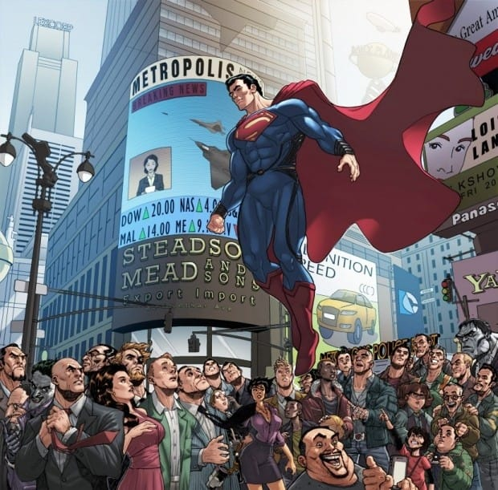
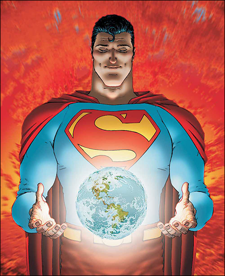
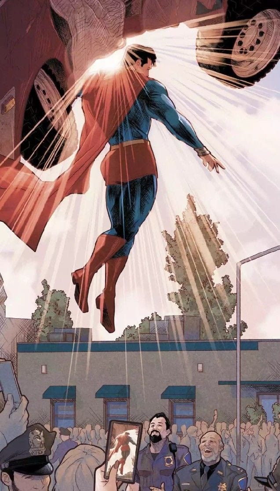
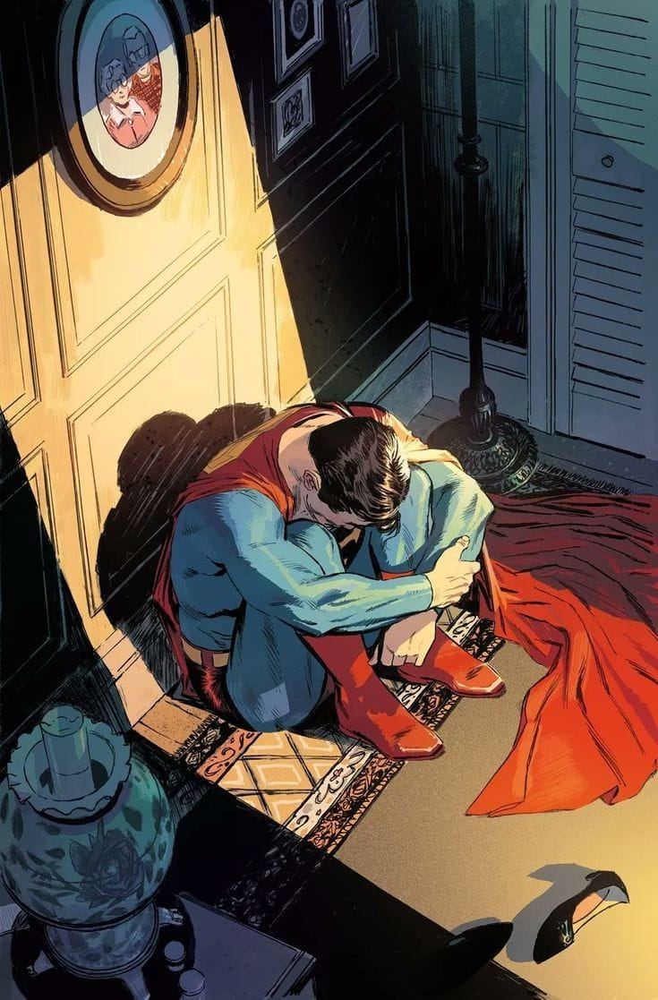
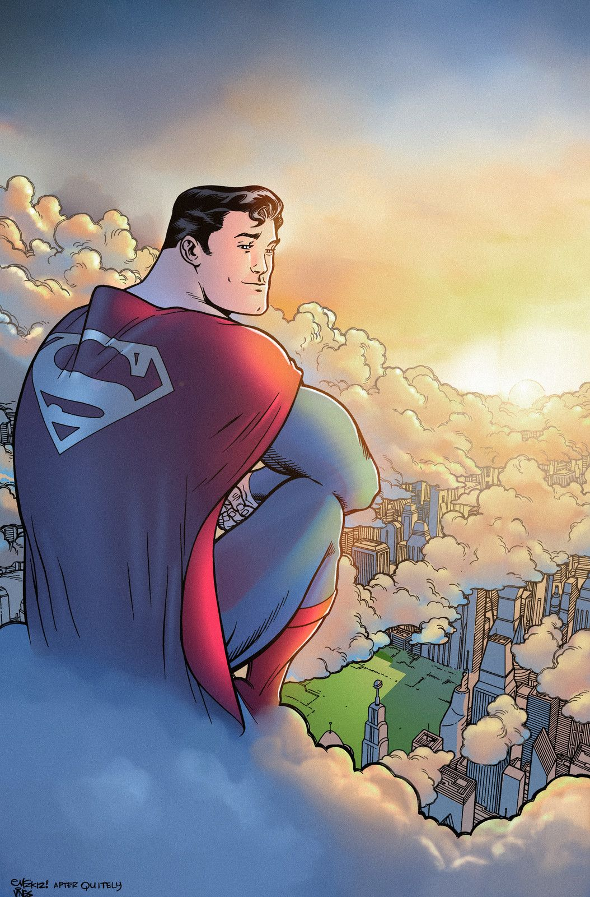
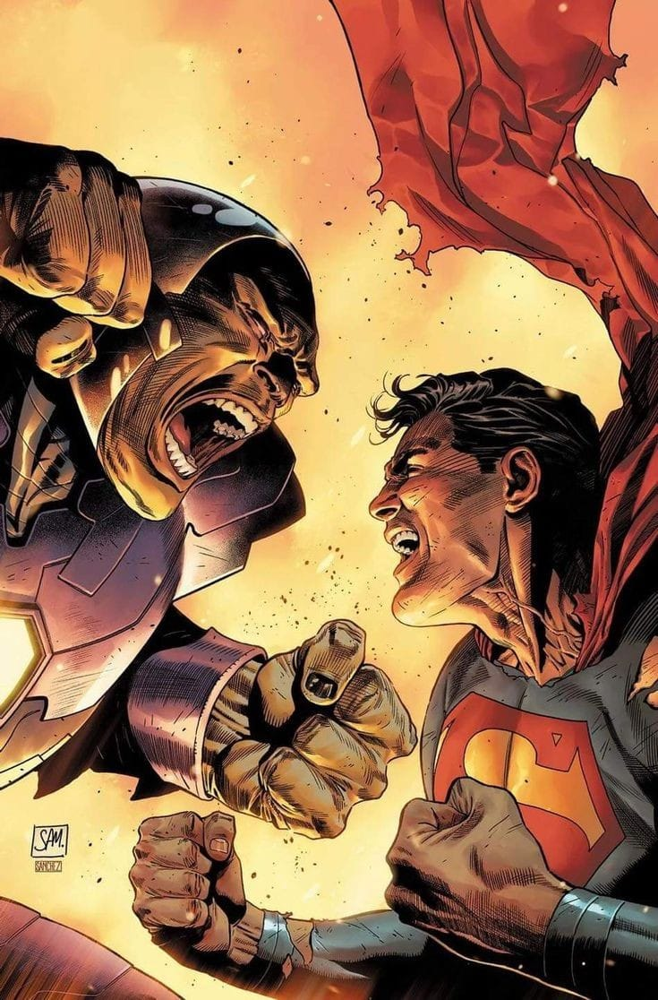

El origén de la esperanza
Superman el ultimo hijo de Kriptón, siendo uno de los héroes más influyentes en nuestra sociedad, proviene de un planeta muy lejano al nuestro con una mayor tecnología que la nuestra, se podía considerar a los Kriptonianos semi dioses por su fuerza e inteligencia, cualquiera diría que al estar en nuestro planeta el nos vería como seres insignificantes, pero nada más lejos que la realidad, y se lo debemos gracias a su crianza en Smallville estuvo en manos de dos granjeros que vivian una vida tranquila, ellos le enseñaron los valores que el defiende como lo son la justicia, el honor, el siempre ayudar a todos sin importar nada. Es gracioso pensar que alguien como el está entre nosotros tratando de llevar una vida tranquila, encajar en nuestra sociedad a pesar de su origen y sus poderes, a pesar de no ser de nuestro planeta es aalguien mucho más humano que cualquiera de nosotros. Considerado como el campeón de metrópolis, superman siempre estará disponible para ayudar a quien necesite de su ayuda, sin importar su género, etnia o posición económica, siempre que veas a superman volar sabes que las cosas pueden cambiar a un mejor futuro porque tienes esperanza en que pueda pasar. “No puedo salvar a todos porque no soy dios, pero puedo intentarlo porque soy Superman.” Superman



Apesar de todo es humano
Las habilidades que tiene superman es de envidiar, desde poder volar, hasta tirar rayos laser por los ojos y sin menospreciar su super fuerza y velocidad, pero a pesar de que pueda cargar con un dedo nuestro planeta, el sigue siendo un humano, superman ve cada que una persona muere gracias a su gran visión, cuando hable con el me dijo que nosotros somos como luces brillantes pero para el es triste ver muchas luces apagarse todos los días, superman se ha enfrentado a múltiples villanos y salido victorioso, pero el se siente solo en un mundo que le teme a pesar de todo lo bueno que ha hecho. El puede escuchar cada voz, aunque sea insignificante y se siente angustiado, estresado, deprimido porque no puede ayudar a todos, todavía recuerdo lo que dijo en televisión “Los sueños nos salvan, los sueños nos elevan y nos transforman en una mejor versión de nosotros mismos, y por mi alma juro que hasta que mi sueño de un mundo donde la dignidad, el honor y la justicia sea la realidad que compartimos nunca dejare de luchar… nunca” Superman.



La esperanza en persona
Superman ayudo a múltiples personas a salir de su propio infierno, la vez que salvo a un niño, que era maltratado por su padre y abusaba de su madre, el a pesar de todo protegió a su madre ya que creía en que superman lo vendría a salvar; ayudo a muchas personas que estaban a punto de quitarse la vida, les hizo ver que todavía tienen algo porque luchar, que no todos los días son de un color negro sino de un amarillo confortante. He visto como superman pasa tiempo con los huérfanos jugando con ellos o contándoles historias, lo mismo pasa cuando visita algún jardín, un hospital todas las personas quedamos maravilladas al ver al gran símbolo de la esperanza, y si alguna vez te sientes solo como si ya no pudieras más recuerda en que el estará para ayudarte, no es un pájaro, no es un avión es superman entrando en acción y siempre lo verás volando portando el símbolo de la S en su pecho que en su planeta de origen Kriptón significa esperanza. Puedes dejar tu comentario más abajo, espero que te gustara mi perspectiva sobre superman. Muchas gracias por su atención.